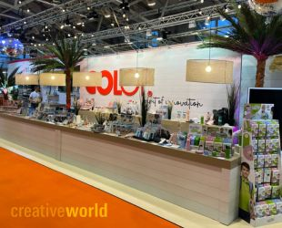
2025Explorez notre univers Arts & Crafts
Nous proposons une large gamme de tampons et d'encreurs pour de nombreuses occasions et utilisations : des tampons en bois soigneusement fabriques, des tampons ingenieux pour le lavage des mains, des tampons auto-encreurs de styles varies et des tampons de tatouages temporaires primes.
 MARKY
Tampons textiles pour la vie de famille
Explorer
MARKY
Tampons textiles pour la vie de famille
Explorer
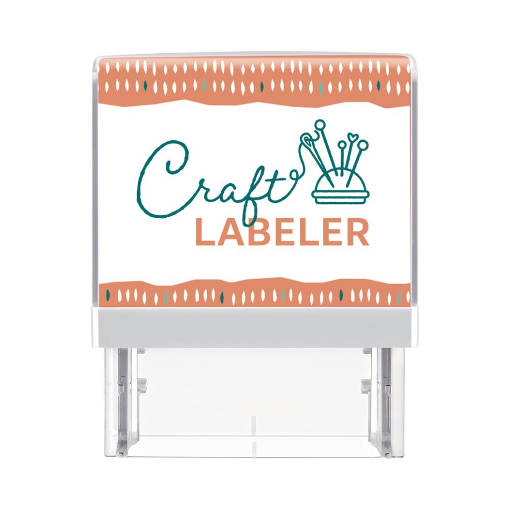
Craft Labeler Gaufrer, etiqueter, decorer Explorer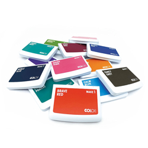
Encreurs MAKE Des couleurs nettes pour creer Explorer Nettoyant pour tampons
Entretien des tampons et encreurs
Explorer
Nettoyant pour tampons
Entretien des tampons et encreurs
Explorer
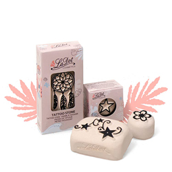
LaDot Tampons de tatouages temporaires Explorer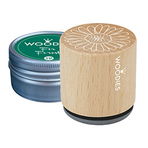
Woodies Motifs classiques en bois Explorer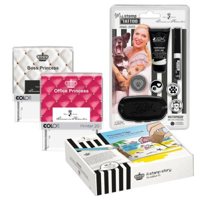
Princess Maja Tampons ludiques pour enfants Explorer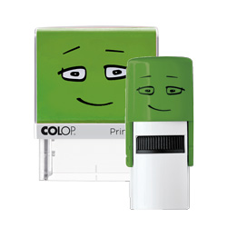
NIO School Petits tampons pour grandes idees Explorer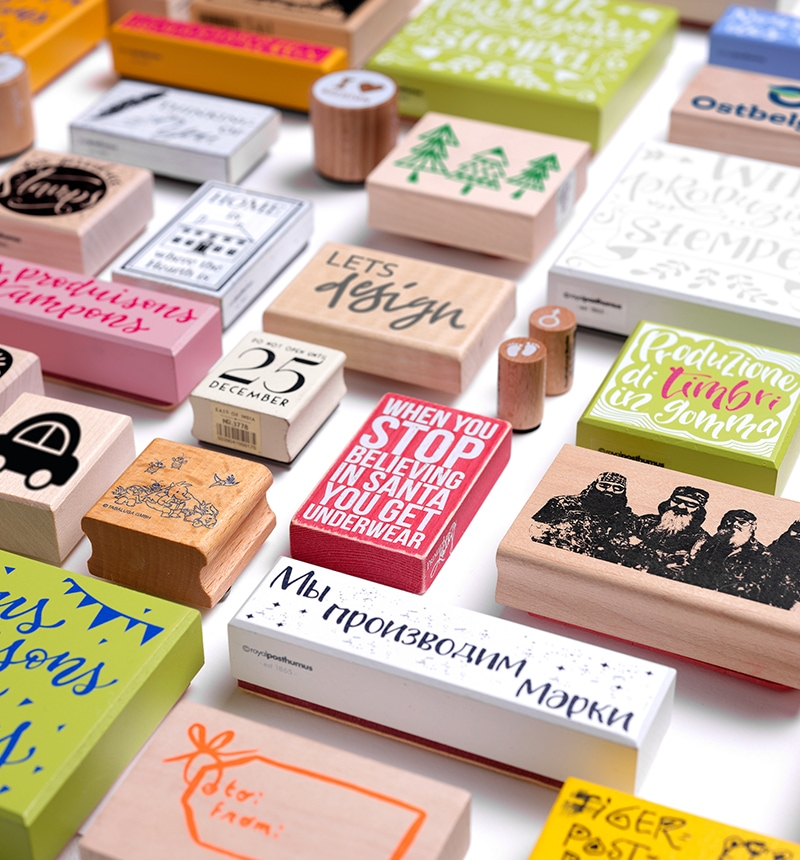
Un partenariat solide pour des tampons creatifs
COLOP Arts & Crafts est l'alliance d'une equipe creative forte de plus de 20 ans d'experience dans le developpement et la production de tampons creatifs, avec le fabricant autrichien COLOP. Nous misons sur une fabrication 100% europeenne, une qualite premium et une image de marque moderne et professionnelle.
Actualites
Meilleures ventes

Trousse Marky - rose
€11.95
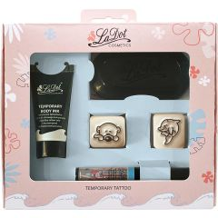
Set LaDot S - Ours & Dauphin
€19.95

Tampon textile Marky - vert
€17.95
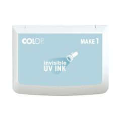
Encreur MAKE 1 - encre UV
€6.19
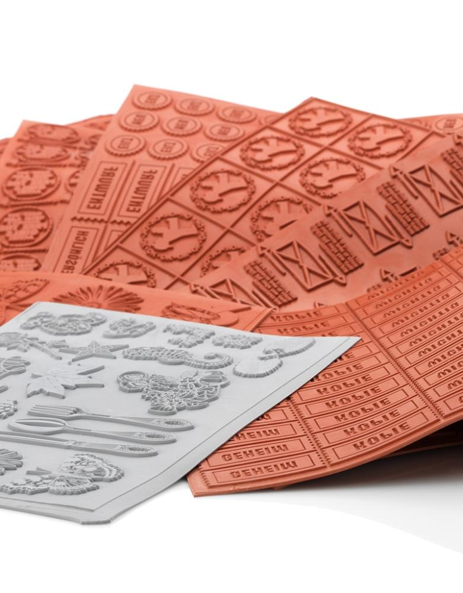
Fabrication de tampons
En tant que l'un des plus grands fabricants europeens de produits de tampons creatifs, nous participons depuis plus de 20 ans au developpement, au marketing et a la production de tampons a motifs, de tampons de loisirs creatifs et de tampons pour enfants.
Les tampons sont des ambassadeurs communicatifs, creatifs et faciles a utiliser pour votre marque. Tampons en bois classiques, tampons pour enfants, tampons de loisirs creatifs, encreurs ou displays complets : nous realisons vos idees rapidement et professionnellement.